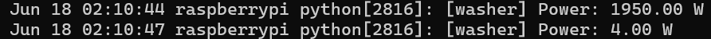
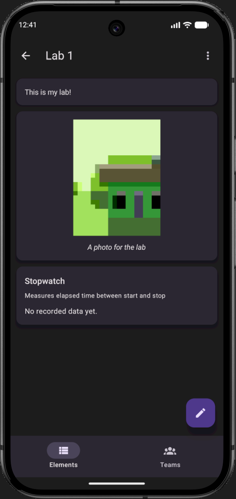
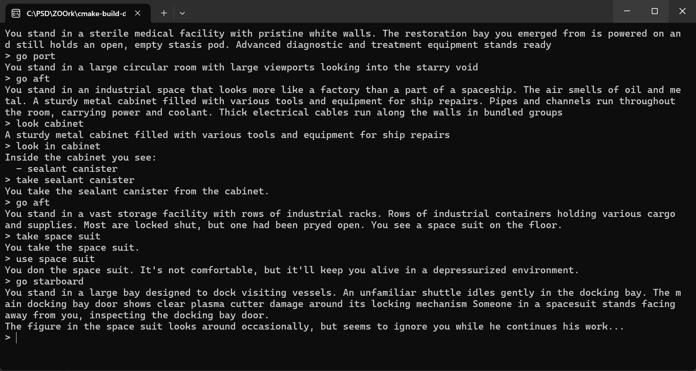

This is my personal website. I made it to share my projects and experience with potential employers and to let them know a bit more about me.
I hope you find something interesting here, and if you have any questions or just want to chat, feel free to reach out!
Professional Projects
These are projects that I've worked on in my professional capacity.
Emergency Powers Safeguards Legislation Amendment Bill 2021
I drafted this piece of legislation as part of my work as a Parliamentary Advisor. The bill was designed to implement safeguards on the use of emergency powers in Victoria and was drafted in response to the Victorian government's use of emergency powers during the COVID-19 pandemic.
The bill requires that uses of emergency powers be ratified by the Parliament as soon as practicable, and outlines a set of rules that require the government to continue to convene the Parliament. The bill also included criminal penalties for the misuse of emergency powers.
As a minor party, we didn't have many opportunities to put forward legislation and we had practically no chance of getting anything passed. It would have been easy to make a silly piece of legislation that makes a big statement, but would be terrible in practice.
However, this bill was carefully considered and well crafted such that would be effective if implemented while still being difficult to for the government to oppose optically. The bill actually passed the second reading stage, which is an enormous achievement for a private member's bill.
Passing this stage means that the bill was debated in the Parliament and, despite the fact that the government spoke against the bill, they voted in favor of it on the record.
I'm personally quite proud of this bill. I was able to use my position and influence to put forward genuine legislation that would proctect the democractic and civil rights of Victorians.
Used: Legal philosophy, policy development, document preparation, political strategy
Database Cleaning
While working for Senator Leyonhjelm, we used a CRM to manage our contacts and communications. The database had been neglected for quite a while and a lot of our records were innaccurate, duplicated or dead records.
When we sent email communications, we paid per contact, so emailing duplicates or dead records were expensive. I took the initiative to clean up the database by merging duplicates, removing dead records, and updating contact information. This improved our communication efficiency and reduced costs.
At the time, I didn't think much of doing this. It just seemed obvious that our data base was a mess and that someone should clean it up. It was a small organization (about 7 staff) and I don't think anyone had the experience to know what to do.
I didn't have the experience either, but I'm technilogically minded and was eager to mess around in spreadsheets. The CRM software we used did not have great tools for achieving this, so it involved pulling the records out the database, running duplication checks in excel, remerging records into the CRM, and removing the old records.
Lots of back-ups and double-checks, but ultimately the changes were successful and there were no issues. In hindsight, this was a big improvement and we should have cleaned the database up a long time ago.
Used: CRM software, excel, data analysis
Membership Atritition
While working for Senator Leyonhjelm, I was tasked with improving the automatic emails we sent through our CRM software. One of these set of emails was the membership renewal email set.
I knew a lot of people didn't open their emails, so it made sense to check how many of these were opened too. In this case, we were losing a huge portion of paid members because they simply never saw the renewal email.
I investigated the options available to have automatic renewals and found that integrating annual renewals into the CRM would be difficult and likely problematic, but integrating monthly renweals was a simple plugin.
Most businesses operate with both monthly and annual memebership options and it seemed obvious that we would implement a similar model.
Ultimately, the party decided that it preferred the annual membership structure without the option for automatic renewal. I don't think this was an active decision, but rather, that underlying party bureaucracy had inadvertantly snuffed the issue.
It's ironic that a party staunchly opposed to wasteful bureaucracy is itself prone to the exact same issues it seems to remedy.
Used: CRM software, data analysis, business strategy
Personal Projects
These are projects that I've been working on in my own time.
Laundry Monitor
A Python program that monitors a smart plug's power readings and figured out when the attached washer or dryer is operating. The script sends a push notification to the owner's phone when the appliance finishes a cycle.
This script runs on a Raspberry Pi Zero that has no interface. I've implemented the setup by flashing a preconfigured OS, then configuring the device remotely via SSH.

I made this thing because I wanted a project to work on. It was a solution in search of a problem, which is why it's overengineered.
The practical upshot of this solution is that I don't need to set a timer on my phone when I put my laundry in the machine. I'll just be notified when it's done. The plug has no way to tell who is using the machine, so I get the notification when my wife does laundry too.
This sounds like a minimally helpful device, but it's actually brilliant. I love this thing. I'm the kind of person who can get distracted from the mundane and become obsessed with the task I'm working on. I will forget to set a timer and 4 hours pass without me thinking once about my laundry. This li'l guy is a lifesaver.
In future, I'll probably roll this into a Home Assistant implementation, but I enjoyed the experience and learned a lot.
A space logistics game developed in Unity. Players begin with a couple planets and ships and have to design routes to move items around and earn income.
As the game progresses, the player will take advantage of randomized bonuses and make more complex systems that are more profitable.
This is a large project that I work on in my spare time. I started making this game with my brother, who is an experienced professional software developer who makes games as a hobby.
Almost all his code has been replaced now, but a lot of the structure of the program was based on his input. You can see I use some of his libraries too.
Don't tell my uni, but I probably learned more from a couple months working with my bro on this game than I did in a whole year of study.
I'm reluctant to put a creative work like this into a public repo, but I'd be happy to show it off privately.
Used: C#, Unity, OOP, Git Collaboration
Academic Projects
These are projects that I've completed as part of my bachelor.
STEMM Lab Mobile App
STEMM Lab provides a way to digitize classroom workbooks. The app was designed to allow students to quickly join a classroom and a team and to work through a digital workbook using the phone's sensors.

This is my biggest engagement with JS and app development. The actual code here is probably terrible because I was learning most of it by doing it.
I do wish the concept for the app was a more engaging, but we had to work to a specification. I learned very quickly from this project and am proud of the final product.
I developed this app in conjunction with a another student.
A C++ text adventure game inspired by Zork, using rooms, items, commands, and object-oriented design.

The game is feature complete but is missing content. It was developed for an assessment and additional content wouldn't demonstrate additional learning.
I'm pretty happy with how this turned out and if I ever get time, I might go back and fill in the story.
Used: C++, OOP
Word Neighbour Finder
Python scripts that processes a large text file, stores unique words, counts duplicates, and finds neighbouring words that differ by one letter.
Sorting algorithms and data structures are probably not something I'll spend much time actually writing, but I do find the underlying understanding of time complexity helps me quickly evaluate the efficiency of different approaches to a problem.
I’m currently studying a Bachelor of Software Engineering. I have a background in politics and philosophy, but I’m looking to transition into programming and/or game design.
My Time in Politics
I have 5 years experience working in government. First as an Electorate Officer, then as a Parliamentary Advisor. The things I enjoyed about politics are the things that touch philosphy and game design.
I enjoy finding truth and I value debate as a means to this. Exploring political ideas is often an extension of exploring philisophical ideas. It's interesting in a detached way.
However, politics in practice is much less about truth and exploration and is much more about proselytization and zeal. I don't enjoy being an idea salesman, or swimming in a water where spin and mistruth are the norm. That's why I'm leaving politics for programming.
The connection between politics and game design might not be immediately obvious, but it's deeper than you'd expect.
Both games and societies are systems where agents interact with each other using a rule based framework. Agents in these systems react to incentives, find exploits, and develop a meta-game.
Designing good rules and systems is a shared challenge between politics and game design.
Programming and Game Design
Making games feels like a two layered puzzle. In the first layer you need to figure out what the game needs and in the second layer you need to figure out how to implement it.
I'm yet to publish anything in this space but the majority of my experience in programming has come from this. This makes it a bit difficult to present my expererience on a resume, but I've spent hundreds of hours working on projects.
Philosophy
When applying for a job I often question how employers will view my philosophy degree. Philosophy is sometimes seen as one of those useless liberal arts degrees that seemingly confers no practical skills or abilities. If you're an employer, or someone who has this view of philosophy, this section is for you.
Philosophy, as an academic subject, is best understood as the study of how to think well. Philosophy graduates have analytical skills that help them improve at everything they do. They tend to be good at identifying problems, developing solutions, and weighing options across domains.
It may not be specificially useful to be able to explain "Nietzche's Slave/Master morality", but I do find it immensely generally useful to have a mental toolbox that equips me take complex, abstract ideas, and organize and reform them effectively.
This toolbox is particularly applicable to software work, where much of the task is about taking abstract ideas and concepts and converting them into a logical system. All the way from if-statements down to logic gates, computing is an implentation of analytic logic.
If that still sounds a bit impractical, rest assured, there are practical skills earned through a philosophy education as well. Philosophy graduates have spent a lot of time writing papers that convey prescise or complex idea and have demonstrated written communication abilities.
Lastly, it might be interesting to consider that students of philosophy tend to perform better on standardized tests than most other majors. They consistently score among the top 5 majors on the SAT and LSAT. For the LSAT in particular, philosphy is often the highest scoring major, which makes sense.
The LSAT is a law exam, where students who can marshal evidence, identify relevant information, and make arguements are likely to excel. Hopefully, this text here is a demonstration of this kind of skill in action. I'm answering the question "what is the value of philosophy?" which is itself, a philisophical endevour.
Lastly, and probably most importantly, philosophy demonstrates a posture of curiosity toward the world.
I will never regret my study of philosophy or how it's helped shape me as a person and I hope that reading this has helped you understand why I would feel that way.